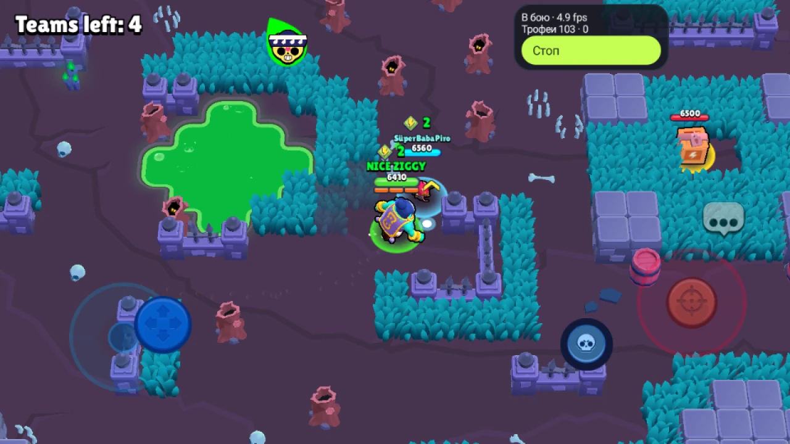

↗ Рассмотреть кадр01 / ПОЛЕ И ЦЕЛИВидеть больше,
Видеть больше,
чем противника.
Стены, вода, кусты, газ и объекты на карте. Бот учитывает обстановку при выборе движения. В Plus можно включить атаки ящиков усиления и подбор кубов.
- Обход препятствий и выход из газа
- Атаки, супер, гаджет и гиперзаряд
- Ящики и кубы усиления — в Plus